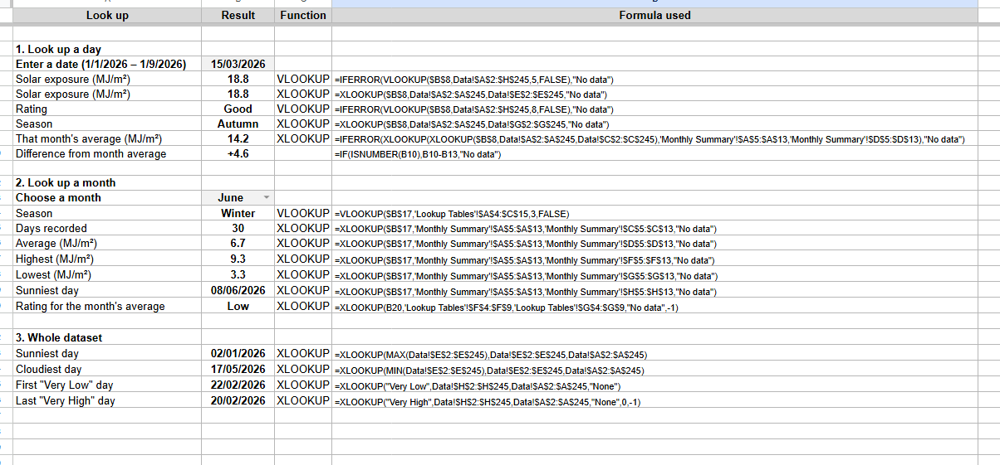
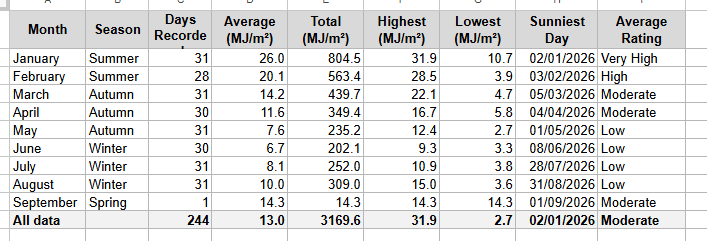
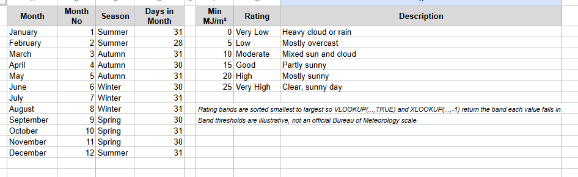
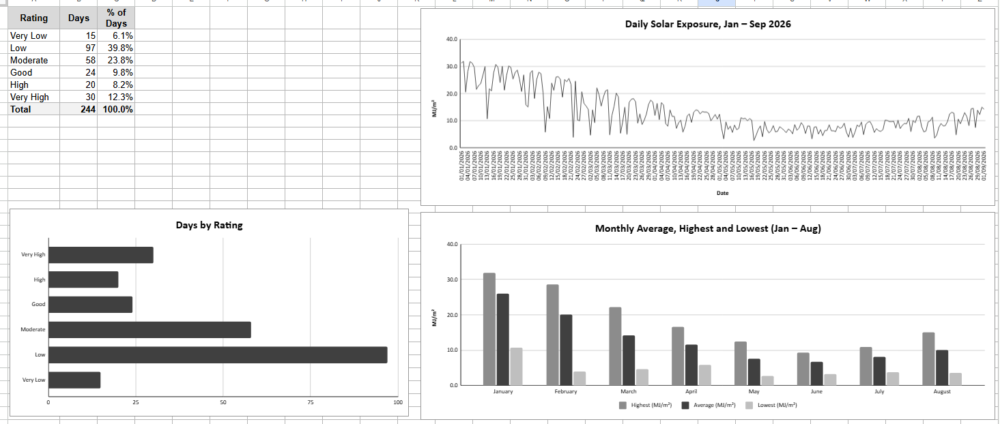

Task 4: Spreadsheets
Completion of the LinkedIn Learning Excel courses, and a spreadsheet I built for my project with my own formulas, lookup functions and charts.
Evidence: LinkedIn Learning courses
Evidence: I completed three LinkedIn Learning courses on Excel, about 6.5 hours of learning in total. Each certificate is shown below (click to enlarge).
| Course | Completed | Length | Skills covered |
|---|---|---|---|
| Excel Boot Camp | 5 September 2026 | 3 h 46 min | Microsoft Excel |
| Excel Data Visualization: Mastering 20+ Charts and Graphs | 5 September 2026 | 2 h 23 min | Data visualisation, Microsoft Excel |
| Excel: Power Query for Beginners | 5 September 2026 | 26 min | Microsoft Power Query, Microsoft Excel |
My project spreadsheet
Project context
Our group, Viridus Machina, investigated whether algae grown in photobioreactors could help reduce Swinburne’s carbon footprint by capturing CO2 on campus (“insetting”) rather than relying on carbon offsets. Algae such as Chlorella vulgaris need enough light to grow well, so I built this spreadsheet to analyse daily solar exposure from the Scotch College weather station, about a kilometre from campus, from January to September 2026. It lets me look up any day or month, summarises each month, rates each day’s solar exposure, and charts how light levels change through the year.
What it includes
| Element | Where (sheet and cell) | What it does |
|---|---|---|
| A formula I wrote | Lookup sheet, “Difference from month average” | =IF(ISNUMBER(B10),B10-B13,"No data") subtracts the month’s average from the chosen day’s solar exposure, e.g. +4.6 MJ/m² for 15 March 2026 |
| Standard functions | Lookup sheet | XLOOKUP and VLOOKUP to look up any day or month, and MAX and MIN inside XLOOKUP to find the sunniest and cloudiest days, e.g. =XLOOKUP(MAX(Data!$E$2:$E$245),Data!$E$2:$E$245,Data!$A$2:$A$245) |
| Charts | Charts area | Daily solar exposure (line), days by rating (bar), and monthly average, highest and lowest (column); see below |



Project chart

- What it shows
- The average, highest and lowest daily solar exposure for each month from January to August 2026
- Data source
- Bureau of Meteorology daily solar exposure, Scotch College weather station, 1 January to 1 September 2026 (244 days)
- Chart type
- Clustered column chart
- Why this type
- It makes it easy to compare months side by side
- Axes
- x = month; y = daily solar exposure (MJ/m²), with a legend for highest, average and lowest
The chart let us visualise how solar exposure changes through the year and determine some of the variables for the project. Average daily solar exposure fell from 26.0 MJ/m² in January to 6.7 MJ/m² in June. From late April to mid-August, almost every day fell below what Chlorella vulgaris needs to grow well, so a rooftop photobioreactor would need LED lighting to top up the sunshine.
Reflection
Situation
Before this unit, I was already fairly comfortable with spreadsheets. I knew how to use formulas, sort data and make basic charts, and my start-of-unit digital skills quiz rated my Excel experience as Competent.
Task
Our project needed us to handle a large dataset, summarise it and draw conclusions from it. I needed to complete the LinkedIn Learning Excel courses and build my own spreadsheet analysing solar exposure for the project.
Action
Much of the LinkedIn Learning content was revision for me. The main adjustment was getting used to Excel after mostly using Google Sheets.
When building my project spreadsheet, the hardest parts were handling dates outside my data, which I solved with IFERROR so the lookups return “No data” instead of an error, and keeping my charts readable, since the daily line chart has 244 dates crowding its axis.
Result
The most useful new skill I learnt was using lookup functions.
I used VLOOKUP and XLOOKUP throughout my project spreadsheet, including approximate-match lookups that sort each day’s solar exposure into a rating band.
What I’d do differently / next
In future, I expect to use spreadsheets for data and lab work in astrophysics, for quick analysis before moving to Python for bigger jobs, and for personal tracking, like my sustainability log.
Next, I’d like to learn more Power Query for cleaning and importing large datasets, how to use pivot tables, and statistics functions such as trendlines and regression for lab data.